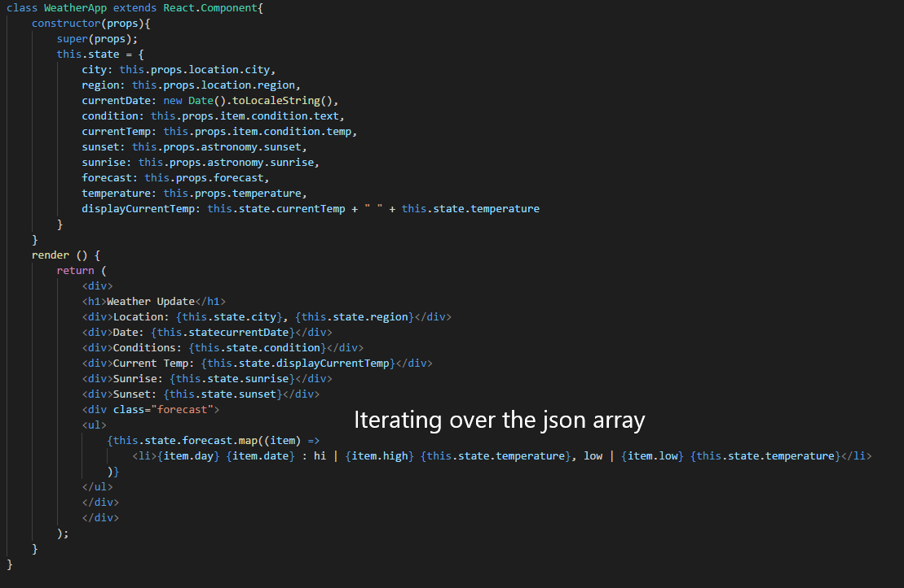

Write up about the project
Main-App (orange)
Weather-Form (red)
Weather-Display (blue)
Forecast
We decided not to break the forecast into a seperate component but rather using a mapping function to go over the json file.
This will be the main app responsible for fetching the json files and rendering the different componets. This is the rendering function which will set up the page.
This will be a display class which is passed a json file from the main app. All of the components will be displayed with props.
The thinking in React document suggests deciding what state is in this step. It poses three questions to determine if what we are working with is state.
With those three things in mind we decided that the weather form will create the query as a state property based on the radio button and the text string
The next part the react docs suggest
The component that displays the information the weather app get its props from the main app. This main app is also the common owner component of the weather form making it the ideal place to holding state.
The only part of inverse data flow should be from the form to the main app which will need the radio button and the value of the textbox to perform the correct query.
Instead of building a Static version, we attempted to build a fully functional version of the App. Part way through we encountered some issues that we're not sure how to fix at the moment; such as how we are retrieving the json file from fetch just fine, but it is not being properly sent to the weather app display.